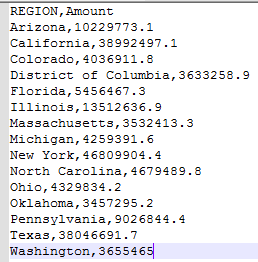
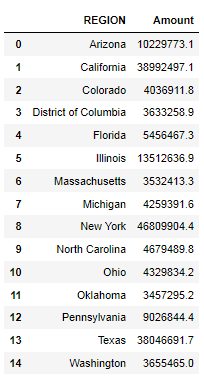
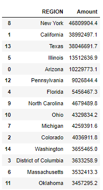

horizontal bar chart
Total balance by location

Here I will create the above graph.
Original csv file
The original CSV file looks like this.

We have two colomns. 'Region' shows the areas where the bank operates. 'Amount' states how much the bank has in a particular region.
Import Libraries
# Import Libraries
import matplotlib.pyplot as plt
import numpy as np
import pandas as pd
# need this to plot at multiples of 2000000 on horizonatl axis
from matplotlib.ticker import (MultipleLocator, AutoMinorLocator)
Import data into a data frame
tb_by_loc_df = pd.read_csv(r'E:\project\matplotlib_project\Total Balance by Location.csv')
tb_by_loc_df

Arranging Amount in descending order
I plan to to plot in descending order.
# arrange the data in descending order by 'Amount'
tb_by_loc_df = tb_by_loc_df.sort_values(by=['Amount'], inplace = False, ascending = False)
tb_by_loc_df

Converting to Numpy array
np_arr = tb_by_loc_df.to_numpy()
regions = np_arr[:,0]
amounts = np_arr[:,1]
Plotting the Graph
# Create a figure and a set of subplots.
# Width x height
fig, ax = plt.subplots( figsize=(8, 4))
# we want to print something like $0M, $10M on x-axis.
# it has to be '1e-6' for formatting to be proper.
#
def millions(y, pos):
#The two args are the value and tick position.
return '${:1.0f}M'.format(y*1e-6)
ax.xaxis.set_major_formatter(millions)
# turn on this if u need more ticks at 5e6.
#
# ax.xaxis.set_major_locator(MultipleLocator(5e6))
# we just want to highlight a particular bar
#
colors = ['cyan', 'cyan', 'cyan', 'blue','cyan', 'cyan', 'cyan', 'cyan', 'cyan', 'cyan', 'cyan', 'cyan', 'cyan', 'cyan', 'cyan']
ax.barh(regions, amounts, color = colors)
# Regions with highest amount will appear first.
ax.invert_yaxis()
#
ax.set_xlabel('Amout')
ax.set_ylabel('Region')
ax.set_title('Total Balance by location')
Graph Output
comments
I manage to customize the horizontal axis in multiple of $10M. It has an uncluttered look. I did try to put major ticks every $5M but the look is messy. I am not sure if there is a cleaner way to make 'Illinois' blue while others stay cyan.